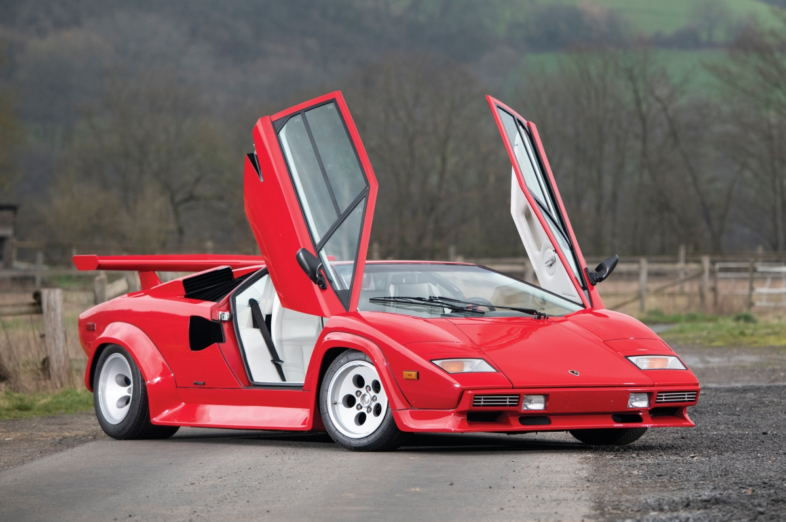

Aventador: El Lamborghini Aventador es un automóvil superdeportivo biplaza de dos puertas de tijera, con motor central-trasero montado longitudinalmente y tracción en las cuatro ruedas, producido por el fabricante italiano Lamborghini, filial del Grupo Volkswagen. Fue concebido para reemplazar al Murciélago, como el nuevo modelo tope de gama.El Aventador monta un motor V12 naturalmente aspirado de 6498 cm³ (6,5 L; 396,5 plg³), que eroga una potencia máxima de 700 CV (690 HP; 515 kW) a las 8250 rpm y un par máximo de 690 N·m (509 lb·pie) a las 5500 rpm. Su velocidad máxima es de 350 km/h (217 mph) con una aceleración de 0 a 100 km/h (62 mph) en 2,9 segundos estimada por la fábrica, siendo confirmada según una prueba realizada por la revista francesa Sport Auto, aunque con una aceleración de 0 a 100 km/h (62 mph) en 2,8 segundos, tres décimas más lento que el Bugatti Veyron. Tiene una transmisión manual electrohidráulica robotizada ISR (Independent Shifting Rod) de 7 velocidades. Asegura un cambio de marchas de 3,4 milisegundos y carece de un embrague en favor de una caja de cambios más ligera, pero más tosca. La potencia se transmite a todas las ruedas mediante un embrague Haldex, que transmite mayor potencia a las ruedas traseras y cambia su distribución hasta un 60% al eje delantero cuando es necesario, asegurando mayor control sobre el asfalto, lo cual lo hace mucho más rápido.
El Lamborghini Sesto Elemento nacido como prototipo de super deportivo y hoy parte de la gama de producción, fue presentado por la empresa italiana de automóviles Lamborghini en el Salón del Automóvil de París de 2010. Su nombre hace referencia al sexto elemento de la tabla periódica de elementos: el carbono; ya que para aligerarlo se ha utilizado en su diseño masivamente la fibra de carbono. Es una serie muy limitada, de la que cual se construirán 20 unidades para clientes muy exclusivos de la marca. El precio total es de 1.20 millones de euros.El prototipo presentado originalmente estaba ensamblado sobre la base de un Lamborghini Gallardo LP570-4 Superleggera Edizione Tecnica. Todo el Lamborghini Sesto Elemento está diseñado pensando en ganar la batalla contra el peso haciendo hincapié en los materiales y alcanzado un peso final de 999 kg. Para aligerarlo utiliza fibra de carbono en el habitáculo, en toda la sección frontal de la carrocería y en los parachoques. El motor es un V10 montado en posición central longitudinal con 5.2 litros de cubicaje y 570 CV. A pesar del aumento de peso que pueda suponer el Sesto Elemento utiliza un sistema de tracción integral permanente, mediante un diferencial central de acoplamiento viscoso, combinado con un autoblocante cuyo tarado transmite un 45% al eje posterior y un 55% al anterior. El vehículo posee una distancia al suelo de 8.7 cm. El cambio es de tipo robotizado e-gear y los frenos cuentan con discos carbo-cerámicos que van alojados en vistosas llantas de CFRP. El peso mínimo combinados y la potencia que alcanza el motor consiguen una relación peso/potencia de 1,75 kg por CV, lo que se traduce en unas prestaciones de vértigo: 2,5 segundos en el 0 a 100 km/h, tiene una velocidad máxima de 350 km/h. (Como referencia, basta decir que un Lamborghini Gallardo LP 570-4 Superleggera pesa 1.340 kg y tiene una relación peso/potencia de 2,35 kg/CV). En el diseño exterior llaman la atención los faros frontales, que son de tipo bi-xenón y están enfatizadas por medio de cuatro ledes colocados verticalmente, la zona posterior por su reducido voladizo y por la adopción de un difusor, un deflector aerodinámico y un alerón que aportan apoyo a alta velocidad y el portón del motor que forma una única pieza con el paragolpes trasero abriéndose al unísono (detalle que estaba ya presente en el Lamborghini Miura). En el interior, de diseño minimalista sólo hay tres botones ubicados en la consola central, uno para poner en marcha el motor, otro para insertar la marcha atrás y el último para activar las luces.